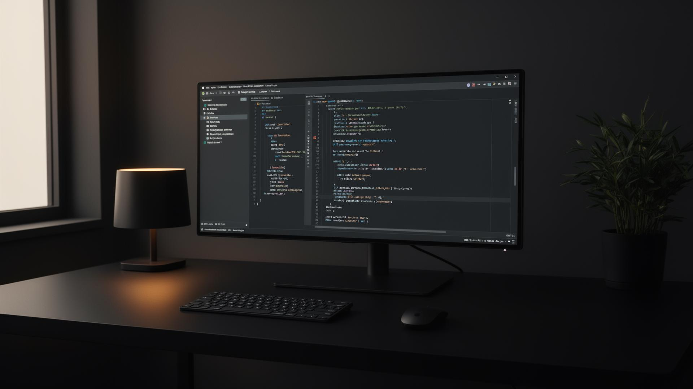

01 / 04
Η αρχή
Η πρώτη ιστορία ξεκινά εδώ. Καθώς ο επισκέπτης κατεβαίνει στη σελίδα, η εικόνα παραμένει σταθερή και το περιεχόμενο κινείται γύρω της.

Η πρώτη ιστορία ξεκινά εδώ. Καθώς ο επισκέπτης κατεβαίνει στη σελίδα, η εικόνα παραμένει σταθερή και το περιεχόμενο κινείται γύρω της.
Η δεύτερη ενότητα ενεργοποιείται όταν φτάσει στο κέντρο της οθόνης. Τότε η φωτογραφία αλλάζει με ομαλό animation.
Μπορούμε να έχουμε όσες διαφορετικές εικόνες και ενότητες θέλουμε. Το animation γίνεται αυτόματα.
Η τελευταία εικόνα ολοκληρώνει την ιστορία και παραμένει ενεργή μέχρι να τελειώσει το section.